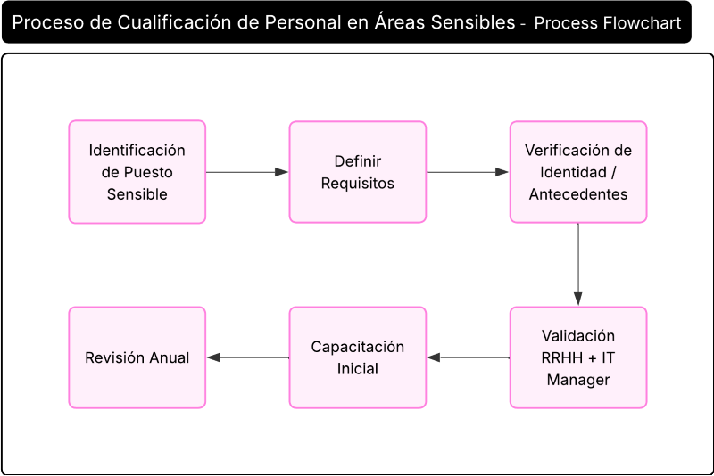

Procedimiento de Cualificación de Personal en Áreas Sensibles
1 OBJETIVO
Asegurar que empleados en puestos críticos cumplan con requisitos de competencia, confiabilidad y verificaciones de identidad, alineados con estándares de ISO/IEC 27001:2022, así como los requisitos del marco TISAX y clientes automotrices.
2 IDENTIFICACIÓN DE PUESTOS SENSIBLES
Departamentos y Roles Críticos en Prodismo
| Departamento | Puesto Sensible | Razón |
|---|---|---|
| Ingeniería | Diseñador CATIA/NX | Acceso a diseños 3D (🔴 Crítico). |
| Proyectos | Gestionador Diseños 3D CATIA/NX | Acceso a diseños 3D (🔴 Crítico). |
| IT | Administrador de Redes | Control sobre servidores on-premise (CATIA, SIP). |
| Fabricación / Producción | Supervisor | Acceso a órdenes de producción confidenciales. |
| Compras | Gestor de Compras | Manejo de información de proveedores y contratos. |
3 REQUISITOS POR PERFIL LABORAL
Matriz de Competencias y Verificaciones:
| Puesto | Requisitos Técnicos | Verificación de Identidad | Certificaciones |
|---|---|---|---|
|
Diseñador CATIA/NX |
- Experiencia en Siemens NX. | ✔ DNI/Pasaporte validado. | - Certificación CATIA V5/V6. |
| Administrador IT | - CISSP o ISO
27001. - Hardening de servidores. |
✔ DNI/Pasaporte validado. | - Microsoft Certified. |
4 PROCESO DE VERIFICACIÓN DE IDENTIDAD Y ANTECEDENTES
Pasos para Contratación:
- Validación de Documentos:
- DNI/pasaporte escaneado con software anti-falsificación (ej.: DocuSign Identify).
- Referencias Laborales:
- Contactar al menos 2 empleadores anteriores (especialmente para Compras).
Herramientas:
- Base de Datos Interna: Registrar resultados en Plataforma interna.
5 CAPACITACIÓN CONTINUA
Programas Obligatorios:
| Puesto | Capacitación Anual | Requisito Cliente |
|---|---|---|
| Diseñador CATIA/NX | - Seguridad
IP. - Phishing. |
BMW GS.11 (watermarking). |
| Administrador IT | - Respuesta a
ransomware. - Normativa TISAX. |
VW IT-Security Requirements. |
| Gestor de Proveedores | - Ciberseguridad en cadena de suministro. | Mercedes-Benz. |
Evidencias:
- Registros de asistencia.
- Evaluaciones post-capacitación (ej.: test de phishing simulado).
Plantillas Clave
A. Formulario de Verificación de Identidad
Candidato: [Nombre]
Puesto: [Diseñador CATIA]
Documento:
Biometría:
Firma del Responsable de RRHH: ________________
B. Checklist de Contratación para Puestos 🔴
- Validación de identidad (DNI/Pasaporte).
- Certificación técnica verificada (ej.: CATIA V6).
- Entrevista con IT Manager (para IT/Ingeniería).
Ejemplo de No Conformidad y Corrección
Hallazgo: Diseñador contratado sin certificación CATIA V6 (Por ejemplo requerido por BMW).
Acción:
- Contratar consultor externo mientras el empleado se certifica (plazo: 3 meses).
- Actualizar política de RH para incluir validación previa.
6 FLUJO DEL PROCESO

Diagrama de Flujo del Proceso de Cualificación de Personal en Áreas Sensibles
7 REVISIONES DEL DOCUMENTO
| Rev. N° | Fecha | Descripción |
|---|---|---|
| 0 | 25/8/2025 | Primera Emisión del documento |
| 1 | 15/1/2026 | Revisión completa del documento |